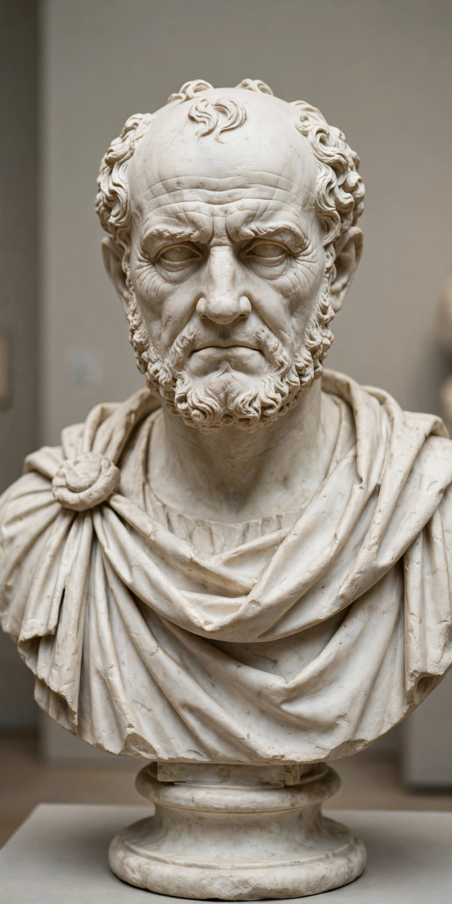

From Wikipedia, the free encyclopedia
| Born | 1st century AD Aquinum (modern Aquino), Italy |
|---|---|
| Died | 2nd century AD |
| Occupation | Poet |
| Language | Latin |
| Genre | Satire |
| Notable works | Satires |
Decimus Junius Juvenalis (Latin: [ˈdɛkɪmʊs ˈjuːniʊs jʊwɛˈnaːlɪs]), known in English as Juvenal, was a Roman poet active in the late first and early second century AD. He is the author of the collection of satirical poems known as the Satires. The details of Juvenal's life are obscure, although references within his text to known persons of the late first and early second centuries AD fix his dates of composition.
Juvenal's sixteen satires, divided into five books, are written in dactylic hexameter and savagely attack the vices, corruption and folly of contemporary Rome. His indignant, declamatory manner — indignatio — made him the model of verse satire for later European literature.

Juvenal, author of the Satires.
Almost nothing certain is known of Juvenal's life. Ancient biographies (vitae) prefixed to medieval manuscripts are unreliable and partly contradictory. He was probably born at Aquinum in Latium, the son or foster-son of a wealthy freedman. Inscriptions from Aquinum appear to record a Juvenal who held local priesthoods and municipal office. He seems to have had a rhetorical education and may have practised as a declaimer. The biographical tradition claims that he was exiled — possibly by Domitian or under a later emperor — for an attack on a favourite actor, though modern scholars doubt the story. His later satires show familiarity with Egypt and Britain, which may reflect travel or military service.
The sixteen satires are arranged in five books, published between roughly AD 100 and 130. In the programmatic first satire Juvenal declares that the corruption of Rome makes it "difficult not to write satire" (difficile est saturam non scribere) and that "indignation makes the verse" (facit indignatio versum). Famous targets include legacy-hunters, corrupt patrons and their humiliated clients, women (Satire 6, the longest), foreigners in Rome (Satire 3), gluttonous emperors and courtiers (Satire 4, on Domitian's council deliberating over a giant turbot), and noisy, dangerous city life.
Several of Juvenal's phrases have become proverbial. From Satire 10 come panem et circenses ("bread and circuses") and the prayer for "a sound mind in a sound body" (mens sana in corpore sano). Satire 6 asks quis custodiet ipsos custodes? — "who will guard the guards themselves?" Satire 7 laments the poverty of intellectuals, and Satire 10, "The Vanity of Human Wishes", was famously imitated by Samuel Johnson.
Juvenal writes a grand, rhetorical hexameter, very different from the conversational manner of Horace or the epigrammatic brevity of Martial. His persona is that of the angry moralist cataloguing human folly, though scholars debate how sincerely that persona should be taken. After apparent neglect in late antiquity, Juvenal was widely read in the Middle Ages, and his influence runs through Chaucer, the Elizabethan satirists, Dryden, Pope, Johnson and modern satire.